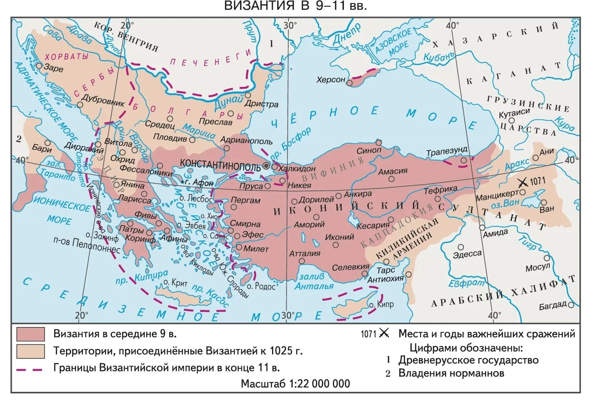
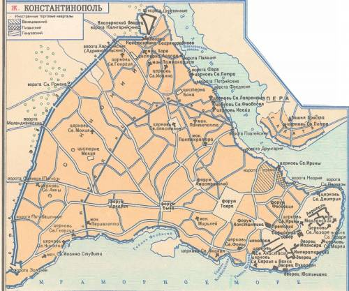
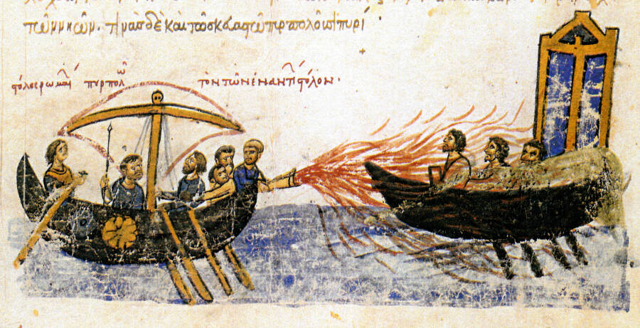

Византийская империя
Наследница Рима
Византийская империя — восточная часть Римской империи, сохранившаяся после падения Запада в 476 году. Столицей был Константинополь (Царьград) — один из крупнейших и богатейших городов средневекового мира, расположенный на пересечении Европы и Азии [[6]].
К X веку Византия переживала период «Македонского возрождения» — время культурного расцвета, военных успехов и дипломатического влияния. При императорах из Македонской династии (Василий I, Лев VI Мудрый, Константин VII Багрянородный, Роман I Лакапин) империя достигла значительного могущества.

Государственное устройство
Византия была централизованной монархией с развитым бюрократическим аппаратом. Император (василевс, автократор) обладал абсолютной властью, считаясь помазанником Божьим.
Сложная система придворных чинов, дипломатическая служба и разветвлённый налоговый механизм делали Византию образцом государственного управления для всего средневекового мира [[6]].
Культура и наука
Византия сохранила античное наследие — труды греческих философов, римское право, достижения науки и искусства. Константинопольский университет, библиотеки, мастерские мозаичистов и иконописцев привлекали учёных и художников со всего мира [[2]].
Именно через Византию античная культура во многом дошла до Руси и Западной Европы.
Византия в X веке: ключевые факты
- Столица: Константинополь — город с населением около 400 000–500 000 человек
- Язык: греческий (с VII века — официальный вместо латыни)
- Религия: православное христианство (восточный обряд)
- Валюта: золотой солид (номизма) — «доллар средневековья»
- Военная сила: профессиональная армия, греческий огонь, мощный флот
- Дипломатия: виртуозная система союзов, подкупов и династических браков
- Императоры X века: Лев VI Мудрый (886-912), Константин VII Багрянородный (913-959), Роман I Лакапин (920-944), Никифор II Фока (963-969), Иоанн I Цимисхий (969-976), Василий II Болгаробойца (976-1025)

«Греческий огонь» — секретное оружие
Византия обладала уникальным оружием — «греческим огнём», зажигательной смесью, которая горела даже на воде. Состав держался в строжайшем секрете. По некоторым данным, это была смесь нефти, серы, селитры и других компонентов.
Греческий огонь наводил ужас на врагов и не раз спасал империю, особенно в морских сражениях. Именно этим оружием византийцы разгромили флот князя Игоря в 941 году [[17]].
